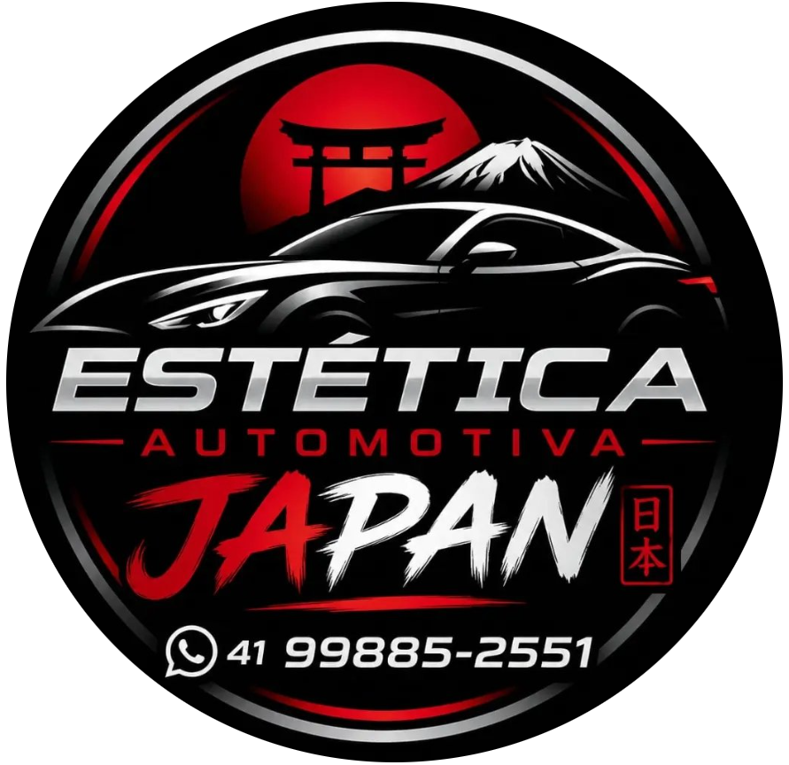
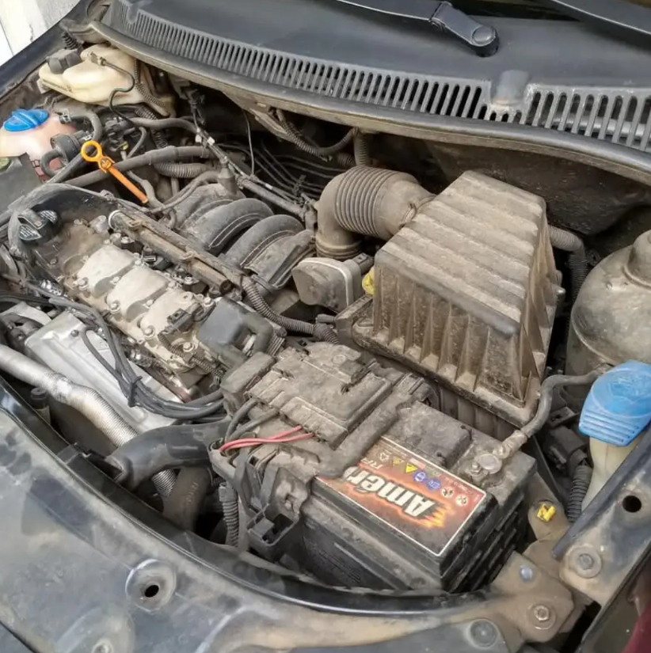
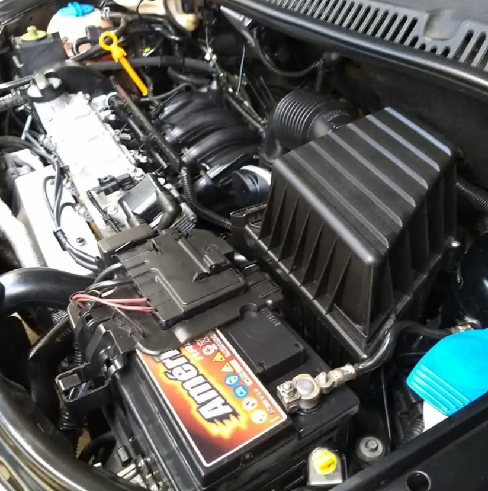
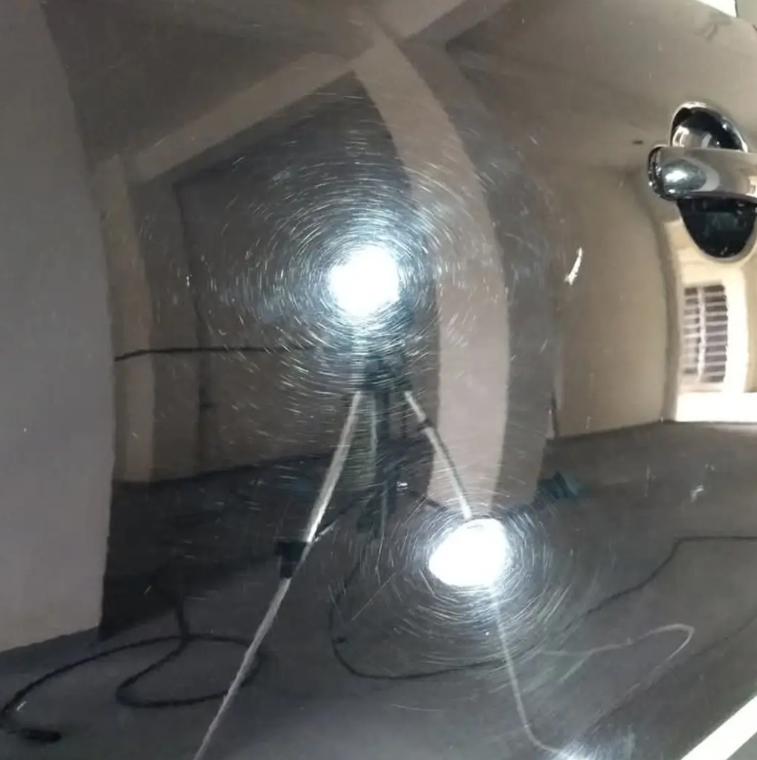
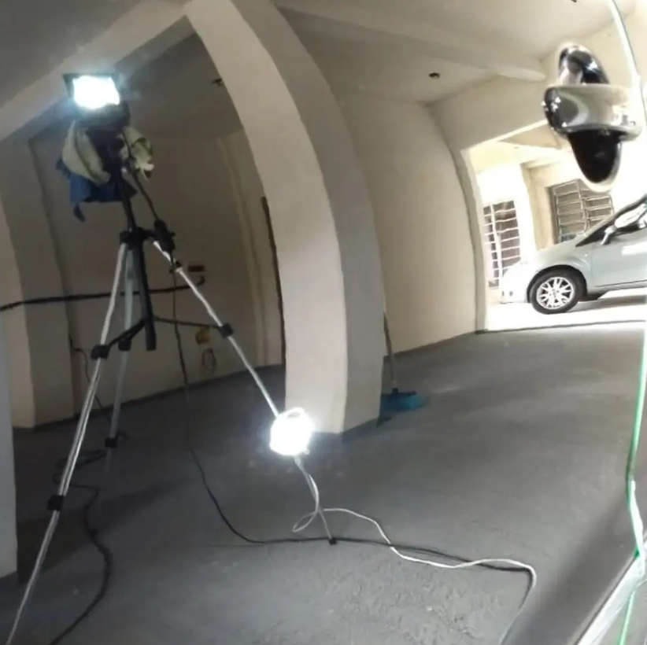
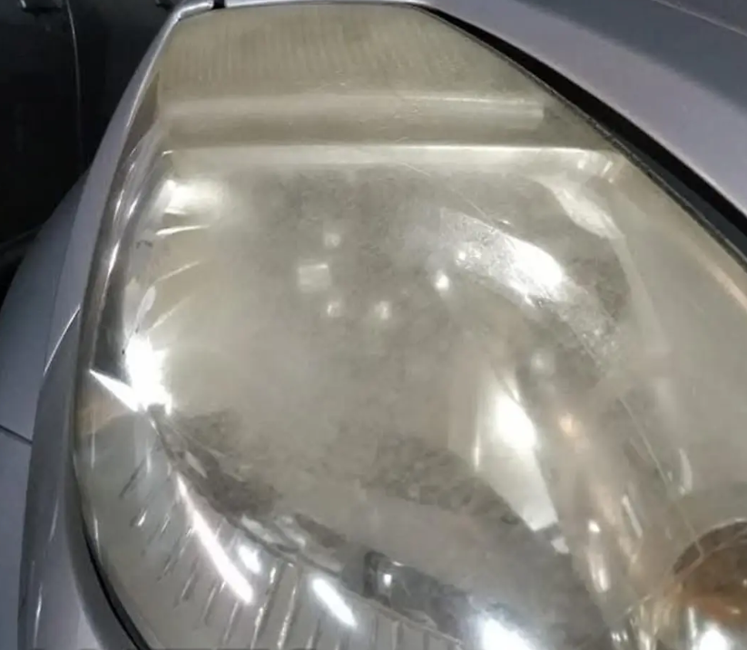
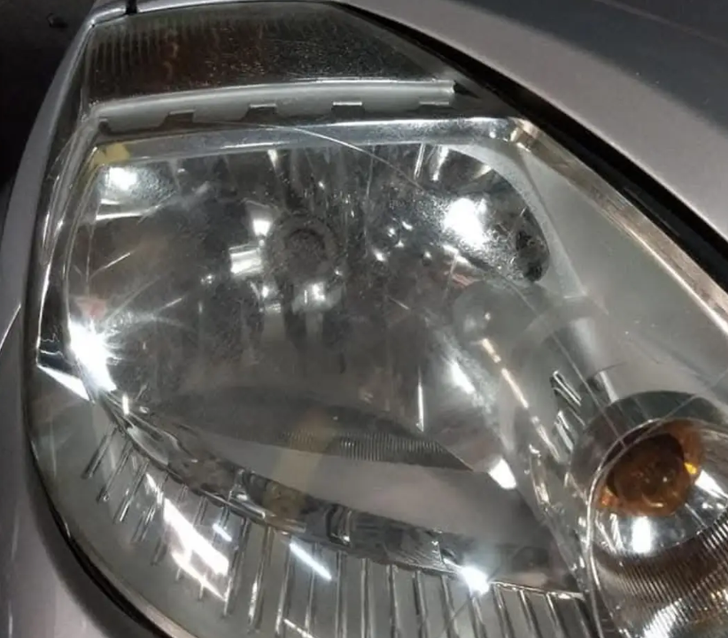
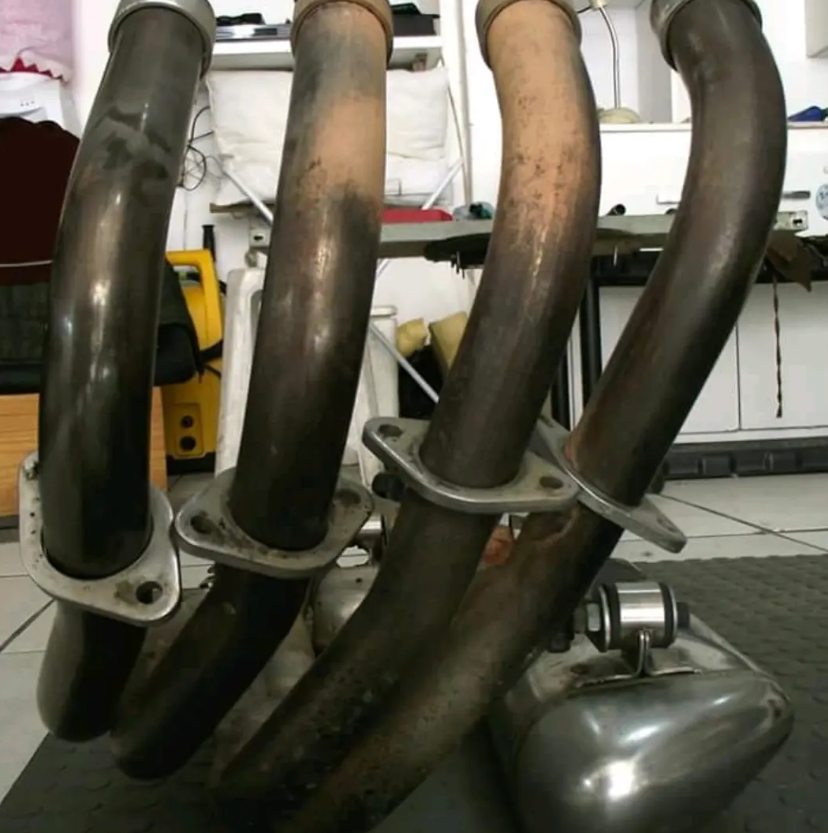
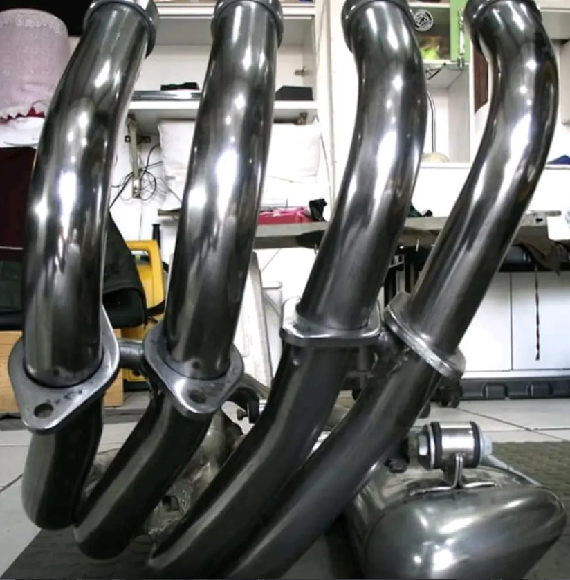

Especialistas em estética automotiva premium. Polimento técnico, vitrificação, higienização e acabamento de alto nível para deixar seu carro com aparência impecável.
Remoção de riscos leves, marcas circulares e recuperação do brilho original da pintura.
Proteção premium para a pintura com brilho intenso e maior resistência.
Limpeza detalhada interna com foco em conforto, acabamento e conservação.


Recuperação visual e acabamento detalhado do compartimento do motor.


Remoção de marcas, riscos leves e imperfeições da pintura, restaurando o brilho e profundidade do verniz com acabamento premium.


Remoção de riscos, amarelamento e opacidade dos faróis, devolvendo transparência, brilho e melhorando a aparência do veículo.


Limpeza e revitalização de peças metálicas com remoção de oxidação, resíduos e aspecto queimado, devolvendo acabamento mais limpo e renovado.
(41) 99885-2551
@japanesteticaautomotiva
Adicionar endereço aqui
Curitiba - PR